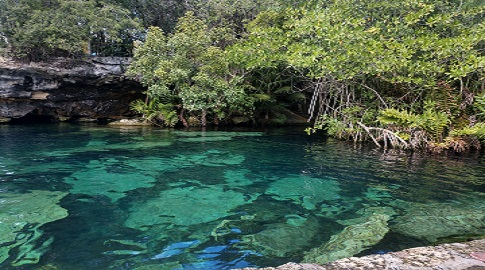
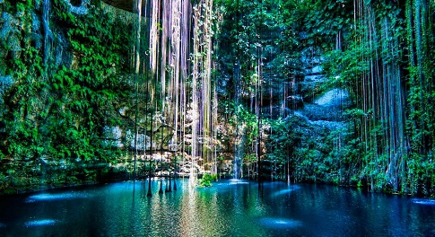

Cenotes en México |
|||||
|  | Cenote Azul | Ubicado en Bacalar, Quintana Roo | Su profundidad es de 90 metros. | Es un destino muy seguro si no sabes nadar muy bien. | |
|  | Cenote de Ik Kil | Ubicado en Chichen Itzá, Yucatán. | Su profundidad es de 40 metros. | Es muy famoso por su estructura rodeada de flores y lianas | |